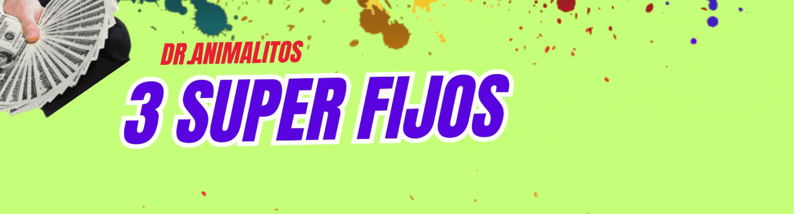
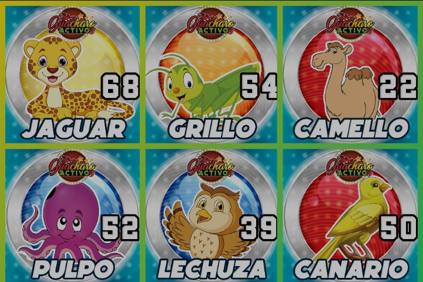

Datos Animalitos: Resultados de lotería de Animalitos, Revisa los resultados de los sorteos de animalitos de hoy de Lotto Activo.
juegos de animalitos venezuela, anialitos venezuela, loterías venezuela, triples venezuela,
Granja Millonaria, Loto Activo, La Granjita, Guacharo Activo, datos Granja Millonaria, datos Chance Animalitos, datos Granjazo Millonario, datos Loto Rey,
Cómo ganar Guacharo Activo
Una vez que hayas llenado tu ticket, debes entregarlo al operador de la agencia, quien te dará un recibo que debes conservar como comprobante de tu apuesta. El operador también te informará el premio que recibirás en caso de que aciertes tu apuesta. El premio se calcula multiplicando el monto de tu apuesta por el factor de pago del animalito, que varía según la categoría:
Los animalitos rojos pagan 30 veces el monto de la apuesta. Los animalitos verdes pagan 60 veces el monto de la apuesta. Los animalitos azules pagan 90 veces el monto de la apuesta. Los animalitos amarillos pagan 120 veces el monto de la apuesta. Por ejemplo, si apuestas 1000 bolívares al tigre (número 2, rojo) y sale sorteado, recibirás un premio de 30.000 bolívares. Si apuestas 1000 bolívares a la mariposa (número 34, amarillo) y sale sorteada, recibirás un premio de 120.000 bolívares.
Después de realizar tu apuesta, debes esperar a que se realice el sorteo correspondiente. Los sorteos se realizan cada hora, desde las 9:00 am hasta las 7:00 pm, y se transmiten en vivo por la página web y las redes sociales de Guacharo Activo. En cada sorteo, se extrae una bolita de una tómbola que contiene 77 bolitas numeradas del 00 al 75. La bolita extraída determina el animalito ganador del sorteo. Si el animalito que elegiste coincide con el animalito ganador del sorteo, ¡felicidades! Has ganado tu apuesta. Para cobrar tu premio, debes presentar tu recibo en la misma agencia donde realizaste tu apuesta, antes de que se realice el próximo sorteo. Si no lo haces, perderás tu derecho al premio.
❤️Oración A Los Vientos Para La Buena Suerte:
Padre, te solicito por el gran poder de los cuatro vientos que me favorezcas con buena suerte.
Sálvame de las maldiciones y los malos deseos de mis enemigos.
Haz que encuentre la fortuna en el amor, la salud y el dinero.
Ayúdame a salir de cualquier problema o dificultad que me arrebate la paz.
Lléname de buenos augurios y permite que pueda cumplir cada uno de mis anhelos.
Que las tormentas y los malos momentos no me hagan caer en desgracia.
Señor, quiero pedirte que tengas piedad de mí para que goce de buena suerte en todo momento. Amén.
Ayúdame a salir de cualquier problema o dificultad que me arrebate la paz. Lléname de buenos augurios y permite que pueda cumplir cada uno de mis anhelos.
Que las tormentas y los malos momentos no me hagan caer en desgracia. Señor, quiero pedirte que tengas piedad de mí para que goce de buena suerte en todo momento. Amén.
Datos Animalitos: Resultados de lotería de Animalitos, Revisa los resultados de los sorteos de animalitos de hoy de Lotto Activo.
Obten aquí los ultimos y mas actuales resultados de los juegos de loto más populares en Venezuela como Animalitos de Venezuela, Loterías de Venezuela, Temrinales de Venzuela y Triples de Venezuela entre otros juegos de lotería y terminales de juego disponibles en el pais sudamericano de Venezuela en nuestro sitio web de resultados de juegos de loto en vivo y en vivo para tu comodidad y disfrute.
Granja Millonaria, Loto Activo, La Granjita, Guacharo Activo, datos Granja Millonaria, datos Chance Animalitos, datos Granjazo Millonario, datos Loto Rey,
Consejos para aumentar tus posibilidades de ganar Guacharo Activo
Juega con responsabilidad. No apuestes más de lo que puedes perder, ni te endeudes para jugar. Recuerda que el juego es una forma de entretenimiento, no una solución a tus problemas económicos.
Establece un presupuesto para jugar. Antes de apostar, decide cuánto dinero vas a destinar al juego y respétalo. No te dejes llevar por la emoción o la frustración y no intentes recuperar lo perdido con más apuestas.
Elige los animalitos con criterio. No te dejes influenciar por los rumores, las supersticiones o las corazonadas. Tampoco sigas los patrones o las tendencias de los sorteos anteriores, pues no tienen ninguna influencia en los sorteos futuros. Lo mejor es que elijas los animalitos que más te gusten o que tengan algún significado para ti.
Varía tus apuestas. No te limites a apostar siempre al mismo animalito o a la misma categoría. Prueba con diferentes opciones y combina animalitos de distintos colores. Así, tendrás más posibilidades de acertar alguno de ellos y de obtener un premio mayor.
Aprovecha las promociones. Guacharo Activo suele ofrecer promociones especiales para sus jugadores, como sorteos adicionales, bonos, rifas o regalos. Estas promociones pueden aumentar tus beneficios o reducir tus costos. Para enterarte de ellas, visita la página web o las redes sociales de Guacharo Activo.

"🚨PARA NUESTROS 3 SUPER FIJOS"
 